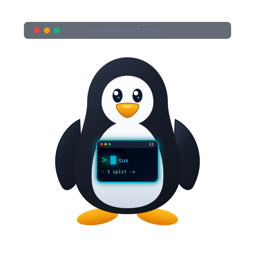

Configura grupos de botones para Git, Sistema, Docker o cualquier aplicación con comandos de un solo clic.
Selecciona un grupo para editar sus botones o añade nuevos grupos y comandos del sistema.Gestiona tus carpetas y rutas favoritas para navegar con un solo clic.
Puedes agregar, reordenar, editar o eliminar accesos rápidos a carpetas del sistema.Exporta o importa toda tu configuración para respaldarla o transferirla a otra computadora.
Permite migrar entre computadoras o crear respaldos completos de todo el entorno de trabajo.
Genera un único archivo .json portátil. Puedes llevarlo a otra computadora con MyTerminal
Tux Tux e importarlo con un clic para dejar todo exactamente igual.
Si prefieres copiar la configuración directamente entre discos o por red sin abrir el programa, todos los datos residen en la siguiente carpeta de tu usuario:
config.json, ssh-profiles.json,
sessions.json y tab-templates.json a la misma ruta en la otra computadora.
Sincronización en la nube con Google Drive y cifrado Zero-Knowledge.
Sincroniza perfiles SSH, sesiones, plantillas y ajustes entre computadoras de forma 100% privada.Conecta tu cuenta de Google mediante tu archivo de credenciales de cliente OAuth (credentials.json).
Aún no has configurado tus credenciales. Puedes seleccionar el archivo credentials.json o client_secret.json de tu proyecto (como el de MyGDriveSync):
Cifrado local AES-256-GCM. Nadie, ni siquiera Google, puede leer tus servidores o contraseñas SSH.
Sube tus datos locales o descarga la última versión almacenada en Google Drive.

Emulador de terminal avanzado, configurable y multiplataforma
Diseñado con arquitectura de divisiones dinámicas al estilo Terminator, pestañas independientes, integración inteligente con Git, gestor de perfiles SSH con autologin y un potente sistema de respaldo y migración multiplataforma.
MyTerminal Tux Tux es software libre bajo licencia MIT. Puedes explorar el código, reportar errores o descargar las últimas versiones compiladas directamente desde el repositorio:
Configura el nombre y correo para los commits en este repositorio local.
Guarda todas las pestañas abiertas y la disposición completa de terminales para restaurarlas en cualquier momento.
Guarda el estado completo de tus pestañas (splits, rutas actuales de carpetas y sesiones SSH) para restaurarlas en cualquier momento.
Esta terminal ya está conectada a ....
¿Cómo deseas conectar al perfil ...?
Al salir se cerrarán estas conexiones de forma segura. ¿Deseas desconectar y salir de todas formas?
Al cerrar esta terminal se desconectará la sesión remota de forma segura. ¿Deseas desconectar y cerrar la terminal?